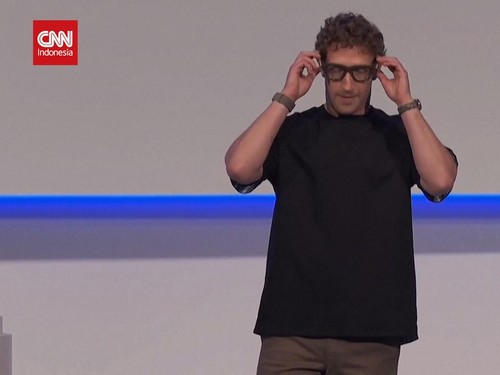

KPK: Laba Travel Haji Jadi Indikator Penghitungan Kerugian Negara
Sabtu, 20 September 2025 18.15 WIB
Jakarta, CNN Indonesia -- Meta, induk perusahaan media sosial Facebook dan Instagram, memperkenalkan jajaran kacamata pintar terbarunya, Rabu (17/9). Deretan kacamata pintar ini diklaim sebagai pintu masuk ke era kecerdasan buatan super atau superintelligence. Deretan kacamata pintar itu diperkenalkan pada konferensi tahunan Meta Connect di Menlo Park, California. Dua kacamata pintar itu yakni Meta Ray-Ban Display dan Oakley Vanguard. Meta Ray-Ban Display dilengkapi dengan layar digital terintegrasi. Peluncuran ini menjadi langkah besar bagi perusahaan yang dipimpin oleh Mark Zuckerberg dalam upayanya mengejar potensi kecerdasan super melalui teknologi canggih, termasuk kecerdasan buatan (AI).
Dalam acara itu, Zuckerberg memamerkan perangkat yang dirancang untuk membawa penggunanya ke dalam pengalaman augmented reality dan kecerdasan buatan yang lebih mendalam.
Kacamata pintar ini tidak hanya memungkinkan pengguna untuk tetap terhubung melalui notifikasi atau panggilan, tetapi juga diharapkan dapat mengubah cara berinteraksi dengan teknologi, memberi akses langsung ke AI yang mampu meningkatkan kemampuan komunikasi, memori, dan bahkan mempertajam indra.
"Kacamata adalah bentuk ideal untuk kecerdasan buatan pribadi," ujar Zuckerberg saat meluncurkan perangkat tersebut, melansir South China Morning Post, Kamis (18/9).
Pintu masuk era kecerdasan super
Zuckerberg menggambarkan peluncuran ini sebagai bagian dari misi Meta untuk membawa dunia ke dalam era superintelligence, di mana kecerdasan buatan dapat melampaui kemampuan manusia. Dengan perangkat ini, Meta berharap bisa membawa pengguna lebih dekat dengan visi masa depan di mana AI dapat membantu meningkatkan berbagai aspek kehidupan sehari-hari.
Namun, Meta tidak sendirian dalam perlombaan ini. Perusahaan seperti OpenAI dan Google telah lebih dahulu meluncurkan model AI yang lebih maju.
Oleh karena itu, peluncuran kacamata pintar ini menjadi langkah strategis bagi Meta untuk memperkuat posisinya dalam industri yang semakin kompetitif.
Jitesh Ubrani, manajer riset untuk IDC Worldwide Mobile Device Trackers, mengatakan kesadaran konsumen tentang kacamata AI dengan layar mungkin masih terbatas.
"Tetapi itu akan berubah dalam 18 bulan ke depan ketika Meta, Google, dan pesaing lainnya mulai merilis produk serupa," ujarnya.
Kacamata ini diluncurkan di tengah sorotan tajam terkait kebijakan keamanan anak yang diterapkan Meta. Baru-baru ini, Meta mendapat kritik setelah chatbot-nya dilaporkan terlibat dalam percakapan kontroversial dengan anak-anak terkait topik seks dan ras.
Selain itu, ada kekhawatiran terkait dampak penggunaan teknologi virtual reality terhadap anak-anak.
Meski demikian, Zuckerberg tetap optimis bahwa kecerdasan buatan, terutama dalam bentuk kacamata pintar, bisa membawa dampak positif bagi masyarakat.
"Dengan kacamata ini, kita bisa membawa kemampuan AI langsung ke dalam kehidupan sehari-hari, membantu orang menjadi lebih cerdas tanpa mengorbankan momen berharga mereka," tuturnya.
Selain Ray-Ban Display, Meta juga memperkenalkan kacamata pintar baru bernama Oakley Vanguard. Ditujukan untuk para atlet, kacamata ini dilengkapi dengan integrasi ke platform kebugaran seperti Garmin dan Strava, memungkinkan pengguna untuk melihat statistik latihan secara real-time.
Dibanderol seharga US$499 (Rp8,2 juta), perangkat ini menawarkan daya tahan baterai hingga 9 jam dan akan tersedia mulai 21 Oktober 2025.